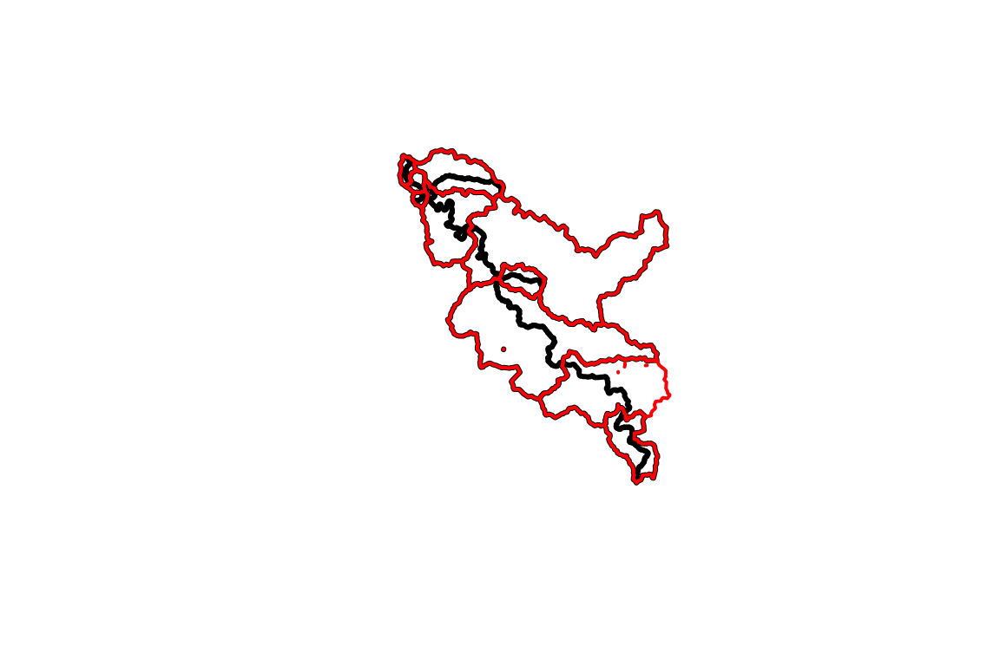
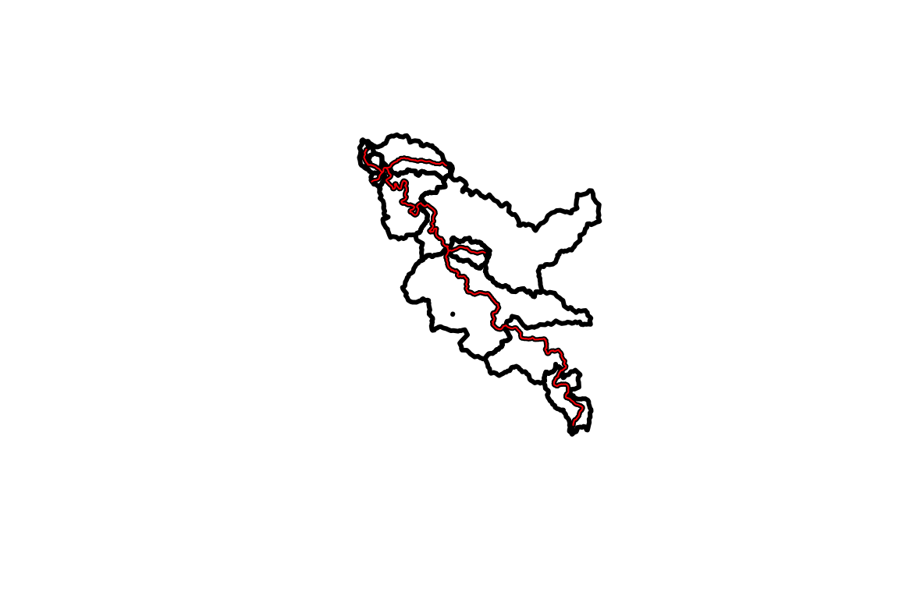

Refactor Catchments
dblodgett@usgs.gov
Source:vignettes/refactor_catchment.Rmd
refactor_catchment.RmdRefactoring Catchments with NHDPlusTools
Load Network and Refactor
For this example, we will use some data available from the nhdplusTools package for testing and examples. fac_sample, fdr_sample, flowline_sample, catchment_sample are all included as sample data in nhdplusTools.
Before we can do anything with the catchments, we need to run the NHDPlus Refactor workflow documented over in vignette("refactor_nhdplus").
library(sf) #> Linking to GEOS 3.8.1, GDAL 3.1.0, PROJ 6.3.2 library(nhdplusTools) #> USGS Support Package: https://owi.usgs.gov/R/packages.html#support library(hyRefactor) #> USGS Support Package: https://owi.usgs.gov/R/packages.html#support library(raster) #> Loading required package: sp source(system.file("extdata", "walker_data.R", package = "hyRefactor")) #> rgdal: version: 1.5-11, (SVN revision (unknown)) #> Geospatial Data Abstraction Library extensions to R successfully loaded #> Loaded GDAL runtime: GDAL 3.1.0, released 2020/05/03 #> Path to GDAL shared files: /usr/local/Cellar/osgeo-gdal/3.1.0_2/share/gdal #> GDAL binary built with GEOS: TRUE #> Loaded PROJ runtime: Rel. 6.3.2, May 1st, 2020, [PJ_VERSION: 632] #> Path to PROJ shared files: /usr/local/Cellar/osgeo-proj/6.3.2/share/proj #> Linking to sp version:1.4-2 #> To mute warnings of possible GDAL/OSR exportToProj4() degradation, #> use options("rgdal_show_exportToProj4_warnings"="none") before loading rgdal. ref <- tempfile(fileext = ".gpkg") rec <- tempfile(fileext = ".gpkg") refactor_nhdplus(nhdplus_flines = walker_flowline, split_flines_meters = 2000, collapse_flines_meters = 1000, collapse_flines_main_meters = 1000, split_flines_cores = 2, out_refactored = ref, out_reconciled = rec, three_pass = TRUE, purge_non_dendritic = FALSE, warn = FALSE) flowline_ref <- read_sf(ref) flowline_rec <- read_sf(rec)
Let’s start by looking at a single sample catchment. In the first plot, you can see the input is a single polygon and a set of catchment flowlines. For reference, the Flow Direction Raster (FDR) and Flow Accumulation Raster (FAC) are also plotted.
sample_catchment <- dplyr::filter(walker_catchment, FEATUREID == 5329435) sample_flowline <- dplyr::filter(flowline_ref, as.integer(COMID) == 5329435) plot(st_geometry(sample_catchment)) plot(sample_flowline["COMID"], add = TRUE)

raster::plot(walker_fdr)

raster::plot( walker_fac)

Now we can run the split_catchment_divide() function which is designed to take one catchment and its associated (split) flowlines. The split flowlines are the “refactored” but not “reconciled” output of the nhdplus_refactor() function we ran above. Here we run the split_catchment() function and plot up the resulting data to show what it did.
split_cat <- split_catchment_divide(sample_catchment, sample_flowline, walker_fdr, walker_fac) #> Loading required namespace: rgeos plot(st_geometry(split_cat), col = NA, border = "red") plot(st_geometry(sample_catchment), add = TRUE) plot(sample_flowline["COMID"], lwd = 2, add= TRUE)

As you can see, the flowline in question was split into five pieces by nhdplus_refactor() and the cooresponding catchment (black) was similarly broken up into 5 sub-catchments (red).
The split_catchment_divide() function can be run against a set of catchments using the reconcile_catchment_divides() function. This functiona can call split_catchment() in parallel, unions catchments according to the output of nhdplus_refactor(), and assembles the results back into an sf data.frame.
split_cats <- reconcile_catchment_divides(catchment = walker_catchment, fline_ref = flowline_ref, fline_rec = flowline_rec, fdr = walker_fdr, fac = walker_fac, para = 4) plot(st_geometry(split_cats), col = NA, border = "red")

plot(st_geometry(walker_catchment), col = NA, border = "black")

plot(st_geometry(split_cats), col = NA, border = "red") plot(st_geometry(walker_catchment), col = NA, border = "black", add = TRUE)

Aggregation
With our flowline network and catchments all refactored and the geometry reconciled, we could also aggregate the resulting network to a selected set of outlet locations.
outlets <- data.frame(ID = c(31, 3, 5, 1, 45, 92), type = c("outlet", "outlet", "outlet", "terminal", "outlet", "outlet"), stringsAsFactors = FALSE) aggregated <- aggregate_catchments(flowpath = flowline_rec, divide = split_cats, outlets = outlets) #> Fixing 1 missing outlets. #> 10 of 10 plot(aggregated$cat_sets$geom, lwd = 3, border = "red") plot(split_cats$geom, lwd = 1.5, border = "green", col = NA, add = TRUE) plot(walker_catchment$geom, lwd = 1, add = TRUE) plot(walker_flowline$geom, lwd = .7, col = "blue", add = TRUE)

#' plot(aggregated$cat_sets$geom, lwd = 3, border = "black") plot(aggregated$fline_sets$geom, lwd = 3, col = "red", add = TRUE) plot(walker_flowline$geom, lwd = .7, col = "blue", add = TRUE)

Splitting Catchments
The split_catchment_divide() function can be used in two ways. If provided with multiple flowpaths per catchment boundary, it will split catchments along their length. If provided one or more with the lr parameter set to TRUE, it will also split each catchment into two pieces along the flowpath. In headwater catchments, the left-right split will extend upstream along the maximum upstream flow accumulation path till it reaches the catchment divide. split_catchment_divide() is called in the refactor_nhdplus() workflow but this left-right split is not applied then. This next block shows how to apply the split to aggregated results.
split_catchments <- do.call(c, lapply(c(1:nrow(aggregated$cat_sets)), function(g, ac, af, fdr, fac) { split_catchment_divide(ac[g, ], af[g, ], fdr, fac, lr = TRUE) }, ac = aggregated$cat_sets, af = aggregated$fline_sets, fdr = walker_fdr, fac = walker_fac))
Here we see the split geometry in black and the original catchments in red.
plot(split_catchments, lwd = 3) plot(st_geometry(aggregated$cat_sets), lwd = 2, border = "red", add = TRUE)

Here we see the split geometry in black again with the flowline used for the split in red.

Identifiers
So you want to know how the identifiers from the original NHDPlus Catchments relate to the output? Let’s look at what’s in the output.
(input_ids <- walker_flowline$COMID) #> [1] 5329303 5329293 5329305 5329317 5329315 5329339 5329343 5329357 5329365 #> [10] 5329373 5329385 5329821 5329395 5329397 5329389 5329435 5329313 5329311 #> [19] 5329817 5329323 5329325 5329327 5329347 5329291 5329363 5329819 5329359 #> [28] 5329333 5329371 5329375 5329377 5329379 5329399 5329405 5329427 5329413 #> [37] 5329419 5329391 5329407 5329387 5329415 5329355 5329337 5329335 5329345 #> [46] 5329341 5329321 5329841 5329815 5329319 5329309 5329307 5329299 5329297 #> [55] 5329295 5329849 5329393 5329871 5329383 5329847 5329845 5329843 (refactored_ids <- flowline_rec$ID) #> [1] 1 2 3 4 5 6 7 8 9 10 11 12 13 14 15 16 17 18 19 20 21 22 23 24 25 #> [26] 26 27 28 29 30 31 32 33 34 35 36 37 38 39 40 41 42 43 44 45 46 47 48 49 50 #> [51] 51 52 53 54 55 56 57 58 59 60 61 62 63 64 65 66 67 68 69 70 71 72 73 74 75 #> [76] 76 77 78 79 80 81 82 83 84 85 86 87 88 89 90 91 92 93 (refactored_id_mapping <- flowline_rec$member_COMID) #> [1] "5329303" "5329293,5329305.3" #> [3] "5329343" "5329373,5329843" #> [5] "5329385" "5329821" #> [7] "5329397" "5329389,5329435.5" #> [9] "5329313" "5329311" #> [11] "5329323,5329325,5329327,5329321" "5329363" #> [13] "5329379,5329399" "5329405" #> [15] "5329391,5329393" "5329407" #> [17] "5329355" "5329335" #> [19] "5329341" "5329299" #> [21] "5329297" "5329849,5329383.2" #> [23] "5329871,5329383.1" "5329847" #> [25] "5329845,5329415.2" "5329305.1" #> [27] "5329305.2" "5329317.1" #> [29] "5329317.2" "5329317.3" #> [31] "5329315.1" "5329315.2" #> [33] "5329339.1" "5329339.2" #> [35] "5329339.3" "5329357.1" #> [37] "5329357.2" "5329365.1" #> [39] "5329365.2" "5329395.1" #> [41] "5329395.2" "5329435.1" #> [43] "5329435.2" "5329435.3" #> [45] "5329435.4" "5329817.1" #> [47] "5329817.2" "5329817.3" #> [49] "5329347.1" "5329347.2" #> [51] "5329291.1" "5329291.2" #> [53] "5329291.3" "5329819.1" #> [55] "5329819.2" "5329359.1" #> [57] "5329359.2" "5329359.3" #> [59] "5329333.1" "5329333.2" #> [61] "5329371.1" "5329371.2" #> [63] "5329371.3" "5329375.1" #> [65] "5329375.2" "5329377.1" #> [67] "5329377.2" "5329427.1" #> [69] "5329427.2" "5329427.3" #> [71] "5329413.1" "5329413.2" #> [73] "5329419.1" "5329419.2" #> [75] "5329387.1" "5329387.2" #> [77] "5329415.1" "5329337.1" #> [79] "5329337.2" "5329345.1" #> [81] "5329345.2" "5329841.1" #> [83] "5329841.2" "5329815.1" #> [85] "5329815.2" "5329319.1" #> [87] "5329319.2" "5329309.1" #> [89] "5329309.2" "5329307.1" #> [91] "5329307.2" "5329295.1" #> [93] "5329295.2" (aggregated_ids <- aggregated$cat_sets$ID) #> [1] 92 79 93 53 45 5 3 31 2 1 (aggregated_id_mapping <- aggregated$cat_sets$set) #> [[1]] #> [1] 92 #> #> [[2]] #> [1] 78 79 #> #> [[3]] #> [1] 93 #> #> [[4]] #> [1] 51 52 53 #> #> [[5]] #> [1] 42 43 44 45 #> #> [[6]] #> [1] 6 7 8 15 16 22 23 40 41 68 69 70 71 72 73 74 75 76 5 #> #> [[7]] #> [1] 4 12 13 14 17 24 25 36 37 38 39 54 55 56 57 58 61 62 63 64 65 66 67 77 3 #> #> [[8]] #> [1] 9 10 11 18 19 33 34 35 46 47 48 49 50 80 81 82 83 84 85 86 87 88 89 90 91 #> [26] 31 #> #> [[9]] #> [1] 20 21 26 27 28 29 30 32 59 60 2 #> #> [[10]] #> [1] 1
This may look like a complicated mess but there’s structure here. Stepping through the identifiers, we have:
- NHDPlusV2 COMIDs (shared between catchment divides and flowlines)
- Refactored Catchment Identifiers (shared between catchment divides and flowpaths)
There are two caveats here.
- Because the source NHDPlusV2 catchments were split, the relationship between refactored catchments and source catchments requires a sequence (.1, .2, .. .10, etc. – upstream to downstream) to differentiate the parts.
- Aggregated catchments use the identifer of the outlet catchment.
Given these caveats, we can build a complete lookup table from source catchment to output aggregate identifier.
refactor_lookup <- dplyr::select(st_drop_geometry(flowline_rec), ID, member_COMID) %>% dplyr::mutate(member_COMID = strsplit(member_COMID, ",")) %>% tidyr::unnest(cols = member_COMID) %>% dplyr::mutate(NHDPlusV2_COMID = as.integer(member_COMID)) %>% # note as.integer truncates dplyr::rename(reconciled_ID = ID) aggregate_lookup_fline <- dplyr::select(st_drop_geometry(aggregated$fline_sets), ID, set) %>% tidyr::unnest(cols = set) %>% dplyr::rename(aggregated_flowline_ID = ID, reconciled_ID = set) aggregate_lookup_catchment <- dplyr::select(st_drop_geometry(aggregated$cat_sets), ID, set) %>% tidyr::unnest(cols = set) %>% dplyr::rename(aggregated_catchment_ID = ID, reconciled_ID = set) (lookup_table <- tibble::tibble(NHDPlusV2_COMID = input_ids) %>% dplyr::left_join(refactor_lookup, by = "NHDPlusV2_COMID") %>% dplyr::left_join(aggregate_lookup_fline, by = "reconciled_ID") %>% dplyr::left_join(aggregate_lookup_catchment, by = "reconciled_ID")) #> # A tibble: 104 x 5 #> NHDPlusV2_COMID reconciled_ID member_COMID aggregated_flowl… aggregated_catc… #> <int> <dbl> <chr> <dbl> <dbl> #> 1 5329303 1 5329303 1 1 #> 2 5329293 2 5329293 2 2 #> 3 5329305 2 5329305.3 2 2 #> 4 5329305 26 5329305.1 2 2 #> 5 5329305 27 5329305.2 2 2 #> 6 5329317 28 5329317.1 2 2 #> 7 5329317 29 5329317.2 2 2 #> 8 5329317 30 5329317.3 2 2 #> 9 5329315 31 5329315.1 31 31 #> 10 5329315 32 5329315.2 2 2 #> # … with 94 more rows
Ta Da!! Have fun and report bugs here.